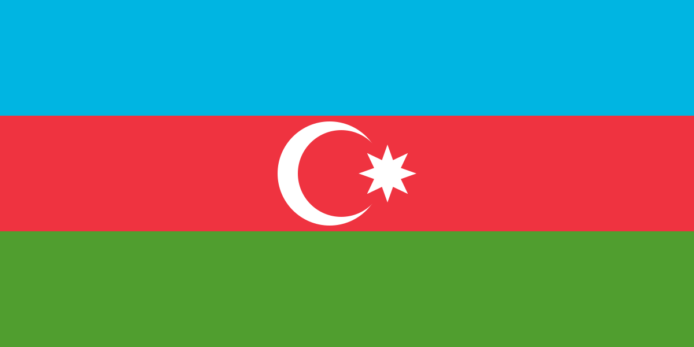
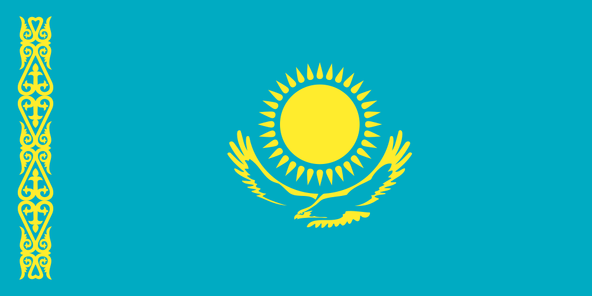
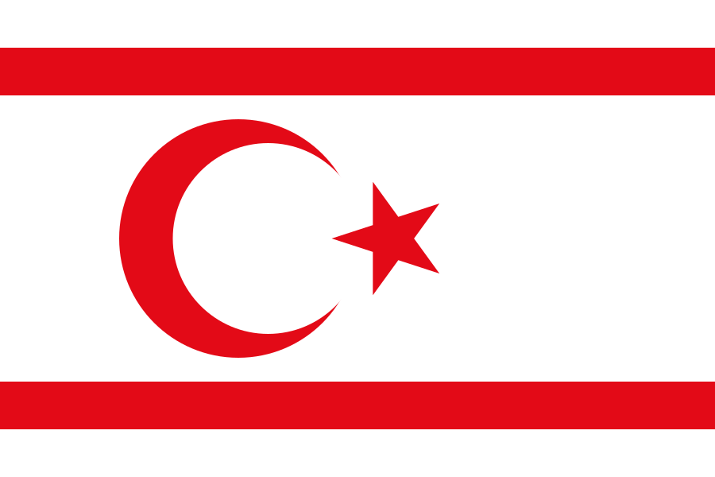

Türkiye Topluluk Odası
Beceri paylaşımı, dil pratiği ve ülke içi dayanışma.
Türk Dünyası'ndaki doğrulanmış öğrencileri; öğretebildikleri, öğrenmek istedikleri ve ayırabilecekleri zaman üzerinden bir araya getiren karşılıklı beceri paylaşım ağı.
Bir öğrenci bildiği bir beceriyi başka bir öğrenciye öğreterek Beceri Puanı kazanır. Kazandığı puanı, Türk Dünyası'nın başka bir ülkesindeki doğrulanmış bir öğrenciden öğrenmek için kullanabilir.
Öğrenci kimliği veya üniversite bilgisi doğrulanır. Gerçek kişi ve öğrenci olma durumu için güven katmanı oluşturulur.
1 saatlik beceri paylaşımı = 1 Beceri Puanı. 30 dakikalık paylaşım = 0,5 puan gibi süreye dayalı bir sistem kullanılır.
Öğretmek istediğin ve öğrenmek istediğin beceriler ülke, seviye ve uygunluk durumuna göre eşleştirilir.
Her gün kısa ve isteğe bağlı sorularla farklı Türk dillerinden kelime ve ifadeler öğrenilir.
İlk iletişim ağ içinde gerçekleşir. Telefon ve adres gibi kişisel bilgiler herkese açık tutulmaz; bildirme ve engelleme seçenekleri bulunur.
Toplu ve anonim verilerle hangi ülkede hangi becerilerin sunulduğu ve hangi becerilere ihtiyaç duyulduğu görülebilir.
Asıl puan kaynağıdır. Gerçek bir öğrenme oturumu gerçekleştir ve ayırdığın zamana göre puan kazan.
Yeni kullanıcıya sistemi deneyebilmesi ve ilk eşleşmesini yapabilmesi için sınırlı başlangıç puanı verilebilir.
“Kazakçada arkadaş ne demek?” gibi kısa görevler 0,2 Beceri Puanı kazandırır. Amaç tam dil öğretimi değil, günlük temas sağlamaktır.
Puanı biten kullanıcı, yalnızca kendi isteğiyle günlük 0,2 Beceri Puanı kazanabilir.
Kullanıcılar ihtiyaç duyan başka bir öğrenciye puan aktarabilir. Böylece sistem içinde dayanışma oluşur.
İlerleyen aşamada üniversiteler, kurumlar veya sponsorlar belirli öğrenme alanları için puan desteği sağlayabilir.
| Faaliyet | Örnek puan | Amaç |
|---|---|---|
| 1 saat beceri öğretimi | +1 | Temel puan kazanımı |
| 30 dakika beceri öğretimi | +0,5 | Kısa oturumları destekleme |
| Günlük mikro dil görevi | +0,2 | Günlük Türk dilleri teması |
| İsteğe bağlı reklam | +0,2 | Puanı biten kullanıcı için ikincil kaynak |
| Puan bağışı | Değişken | Topluluk dayanışması |

Ekonomi öğrencisi • Doğrulanmış öğrenci ✓
1 saat beceri öğret → +1 puan
Bir sonraki öğrenme oturumu için yeterli puan biriktiriliyor.
Filtreleri kullanabilir veya otomatik eşleştirmeyi açabilirsin. Skor; beceri uyumu, dil, ülke, seviye ve uygunluk sinyallerinden hesaplanır.
Bir eşleşme sonrası puan ve yorum bırakabilirsin. Aşağıdaki kayıtlar bu tarayıcıdaki prototip verileridir.
Bu alan serbest sohbet forumu değildir. Sıfır puanlı kullanıcılar yapılandırılmış destek talebi oluşturabilir; diğer kullanıcılar puan bağışlayabilir.
Beceri paylaşımı, dil pratiği ve ülke içi dayanışma.
Beceri paylaşımı, dil pratiği ve ülke içi dayanışma.
Beceri paylaşımı, dil pratiği ve ülke içi dayanışma.
Beceri paylaşımı, dil pratiği ve ülke içi dayanışma.
Beceri paylaşımı, dil pratiği ve ülke içi dayanışma.
Beceri paylaşımı, dil pratiği ve ülke içi dayanışma.
Beceri paylaşımı, dil pratiği ve ülke içi dayanışma.
Arkadaşının Öğrenci ID'sini girerek ona puan gönderebilirsin. Puanın temel kaynağı beceri paylaşımıdır.
Araştırma, eğitim, kültür ve öğrenci deneyimi yazıları ülke filtresine göre görüntülenir. Filtre yazarın ülkesine göredir; yazının diline göre değildir.
Yazar ülkesi profilindeki ülkeden alınır; form üzerinden başka bir ülke seçilemez.
Platform büyüdükçe anonimleştirilmiş toplu veriler, gençlerin hangi becerileri sunduğunu ve hangi becerilere ihtiyaç duyduğunu gösterebilir.





Kullanıcının öğrenci olduğunun doğrulanması, sahip olduğu her beceriyi otomatik olarak kanıtlamaz. Bu nedenle beceriler için seviye testi, sertifika, örnek çalışma, tamamlanan oturumlar ve akran değerlendirmeleri birlikte kullanılabilir.
Bildirme, engelleme, oturum geçmişi, değerlendirme sistemi ve gerektiğinde hesap askıya alma mekanizması bulunur. İlk iletişim ağ içinde tutulur.
Sistem romantik veya sosyal eşleşme üzerine kurulmaz. Öğrenme ihtiyacı eşleşmenin temelidir; kültürel ve sosyal bağ bunun doğal sonucu olabilir.
İlerleyen aşamada sistem; beceri, seviye, ülke, dil, uygunluk ve geçmiş değerlendirmeleri kullanarak uygun adayları önerebilir. Karar mekanizmasının yerini değil, destek katmanını oluşturur.
Öğrenciler sahip oldukları becerileri başka ülkelerdeki akranlarına aktarabilir.
Türk Dünyası'ndaki farklı dillerle günlük ve doğal temas artabilir.
Öğrenme fırsatının yalnızca maddi imkânlara bağlı olmadığı bir model hedeflenir.
Farklı ülkelerdeki öğrenciler arasında sürdürülebilir, amaç odaklı bağlar kurulabilir.
Bu proje iki üniversite öğrencisi tarafından geliştirilmiş bir konsept ve prototip çalışmasıdır.